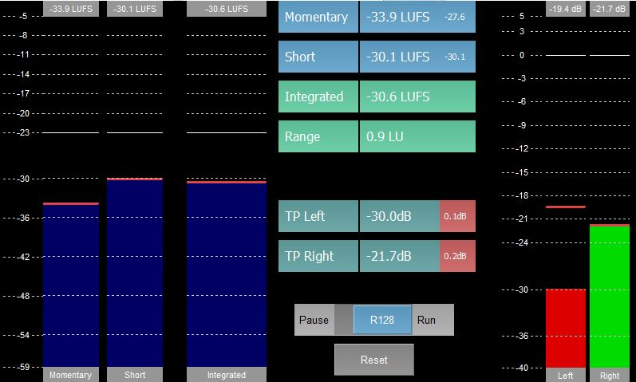
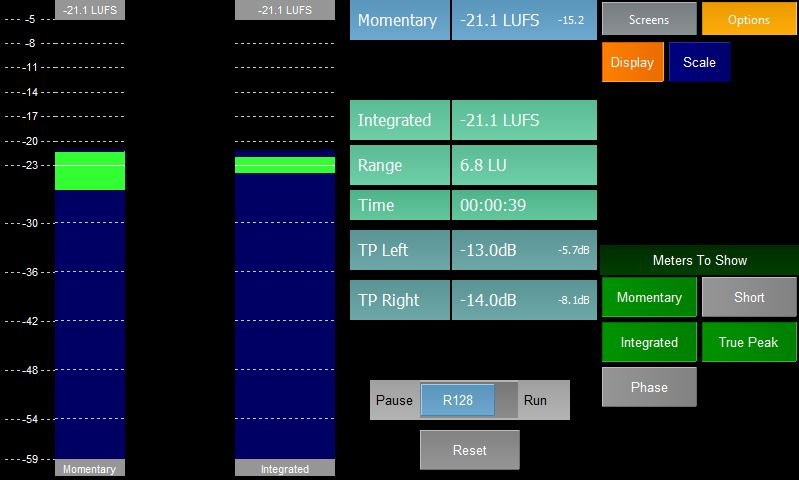
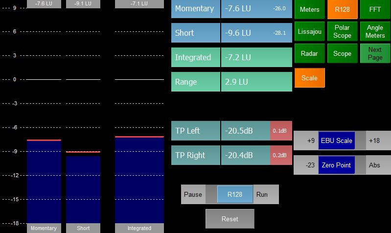

The R128 meter plugin shows a number of meters that conform to the EBU R128 standard.
The left hand meter shows the Momentary loudness - this is the K-weighted LUFS value of 10ms of audio
The next meter shows the Short loudness - the is the K-weighted LUFS value of 400ms of audio where each chunk has a 300ms overlap
The third meter shows the Integrated loudness
The meters are coloured blue if the level is too low, green if in range and orange if too high.
The middle of the screen show the Momentary, Short and Integrated loudness as values and the loudness range. The small text in the Momentary and Short labels shows the maximum loudness.
Below this are the True Peak level values for the two channels. These labels will flash red any time the true peak level goes over 0dBFS. The small text in the label shows the maximum true peak level.
Below the True Peak levels is a "Phaseometer". This shows how in phase the two legs of the audio are (from -1=fully out of phase to +1=mono)
At the bottom is a switch that enables the user to Pause the measurements and a button to Reset them.
Note - leaving the page will also pause the measurements.
The meters on the right hand side show the true peak level of the audio - this is calculated by 4x oversampling the audio and then passing the resultant audio through a 22kHz Low Pass Filter.

The Display panel allows the user to hide and show each of the meters that appears on the R128 panel.

There are two standard R128 scales
The meters can aslo be absolute or relative. In relative mode 0LU = -23LUFS